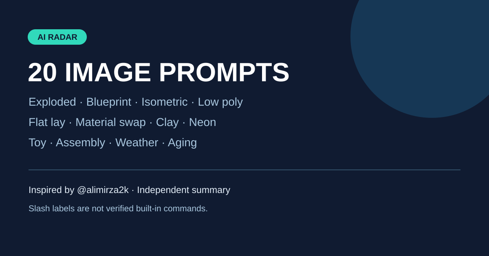

Instagram｜Ali Mirza 的 20 種 AI 圖像提示詞
一句話摘要
Instagram 創作者 Ali Mirza（@alimirza2k）分享 20 種圖像轉換構想，涵蓋爆炸分解圖、藍圖、等距插畫、材質替換、紙雕與產品攝影；以下完整保留公開貼文中每一項英文名稱與描述，方便複製改寫。

重要使用界線
貼文的 /exploded 等斜線字串是作者用來命名構想的標籤，未經證實是 ChatGPT 的內建指令；不要假設只輸入標籤就會啟動特定功能。建議複製下面的英文描述，加入主體與具體要求，以自然語言要求可用的圖像生成工具處理。貼文稱這些提示詞「VIRAL」是作者的宣傳說法，不代表效果或流量已獲驗證。
20 組提示詞：公開貼文原文
以下逐項保留原文英文描述、拼字和標籤，以及原文所附的三段示例文字；第 7 項的 VITAIN C... 是原文如此，並非此處擅自更正。為方便閱讀，標籤的裝飾符號不重複顯示。
1. /exploded
Break an object apart into separated floating pieces showing how it fits together.
2. /blueprint
Turn any object into a clean architectural or engineering blueprint style drawing.
3. /isometric
Convert a scene or object into a clean isometric 3D illustration.
4. /lowpoly
Recreate an image using simplified low poly geometric shapes.
5. /sketch
Turn a photo into a hand drawn pencil sketch with visible line work.
6. /blueprint3d
Show an object as a glowing 3D wireframe rotating in space.
7. /packshot
Turn a product into a clean studio packaging shot with soft shadows.
Label text: VITAIN C...
8. /flatlay
Arrange related objects into a neatly organized top-down flat lay.
9. /timelapse
Show the same subject across multiple stages of change in one frame.
10. /sizecompare
Show two or more objects side by side to compare their real scale.
11. /materialswap
Recreate an object using a different material like glass, metal, or wood.
12. /popup
Turn a flat image into a paper pop-up book style illustration.
13. /claymodel
Recreate a subject as a soft clay or plasticine sculpture.
14. /neonsign
Turn text or an object into a glowing neon sign illustration.
Sign text: Good Vibes
15. /mapview
Create a stylized map showing a location, route, or layout.
16. /toyversion
Turn a real subject into a collectible toy or figurine version.
17. /crackedopen
Show an object cracked open to reveal what is hidden inside.
18. /assemblyguide
Turn an object into a step-by-step assembly instruction illustration.
Steps: 1, 2, 3
19. /weatherchange
Show the same scene under a different weather condition.
20. /agingeffect
Show how an object or subject would look aged over time.
繁體中文使用建議
- 挑選上面一段英文描述，指定主體、構圖、材質、光線與輸出比例；需要編輯現有圖片時，使用有權使用的參考圖，並說明哪些部分必須保留。
- 範例：以上傳的咖啡機為主體，製作零件分離懸浮的爆炸分解圖，白色背景、柔和棚燈、正方形構圖，保持原本外型與顏色。可搭配第 1 項英文描述一起使用。
- /timelapse 原文要求在單一畫面呈現不同階段，不保證產生影片；/blueprint3d 的旋轉也只是描述，靜態圖片無法實際旋轉。
- 尺寸比較、裝配順序、結構內部與地圖內容可能不精確，不可替代實測、工程圖、產品說明或導航。文字常需重試或後製；涉及人物照片、商標或作品時注意同意、隱私與使用權。
- 先產生一張、檢查結果，再逐次調整一項；產品功能、可用模型與成果視服務而異。
來源與相關資料
- 原貼文： https://www.instagram.com/p/DehweompjAt/
- 圖像提示詞的一般規劃與編修，可參考館藏「OpenAI 官方｜GPT Image 2.5 圖像提示詞與編修方法指南」。
- 貼文於 2026-10-15 發布；2026-11-03 擷取公開頁面文字。原貼文另以留言「100」推廣工具清單，本篇未追索留言私訊或驗證該清單。
- 上方摘要圖為自製，不是貼文原圖；來源圖著作權及轉載授權未核實。來源圖片與擷取證據僅留本機，原文以公開貼文為準。